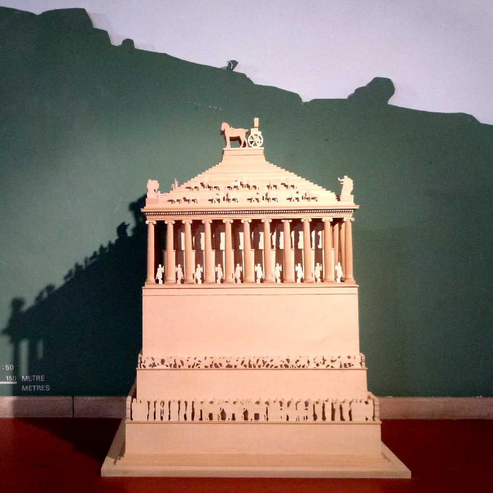
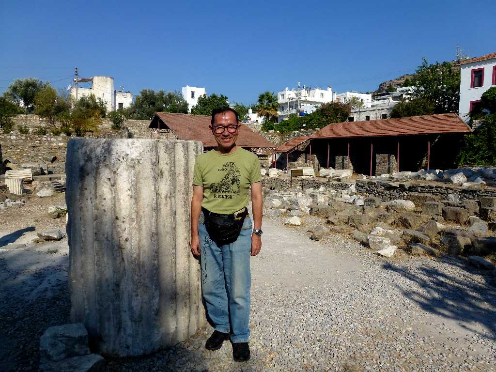
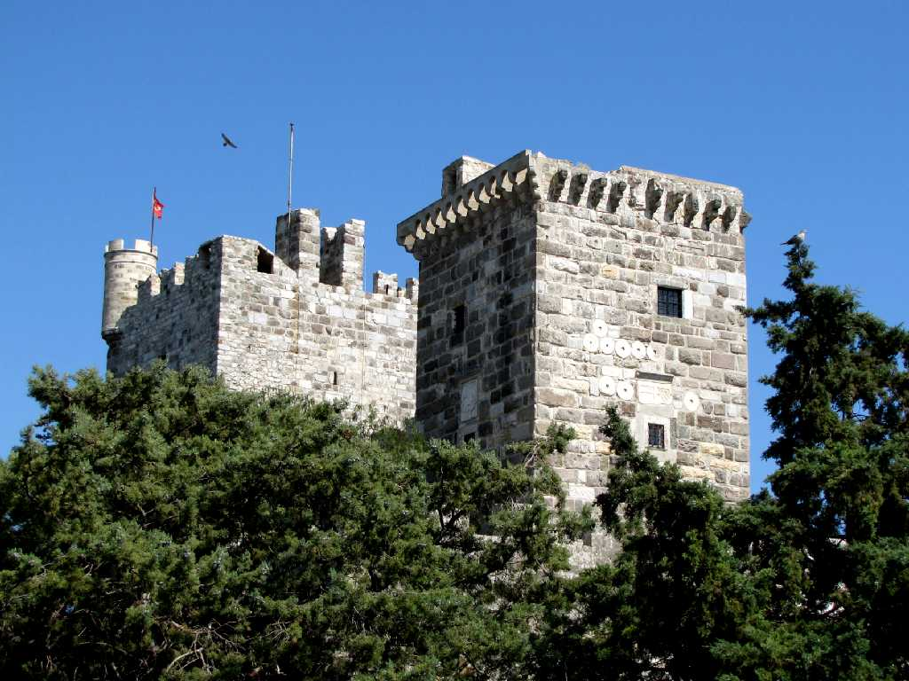
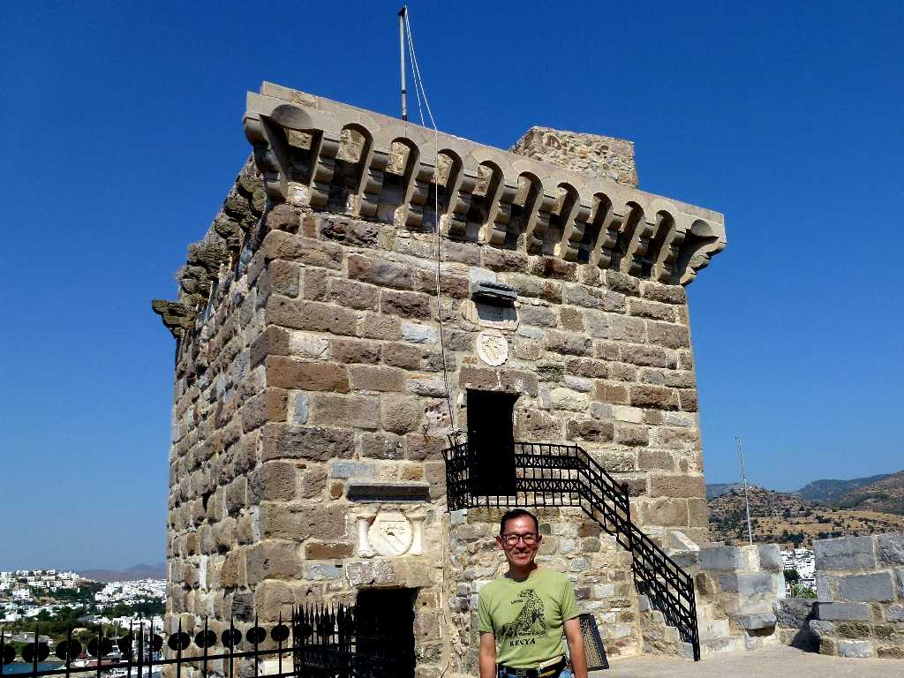

Mausoleum of Maussollos at Halicarnassus
世界の七不思議のひとつハリカルナッソスのマウソロス霊廟 マウソロスとその妻アルテミシアの遺体を安置するために造られた霊廟でギリシア人建築家のピティオスとサティロスによって設計され スコパス レオカル ブリアクシス チモフェイ という４人の高名な彫刻家によって彫刻が施されたものでその壮麗さから世界の七不思議に選ばれている

September 4 2011 Mausoleum of Maussollos at Halicarnassus

Bodrum Kalesi
ボドルム城は１５世紀にロードス島を拠点とするヨハネ騎士団によりハリカルナッソスのマウソロス霊廟の石材を使用して創られた

September 4 2011 Bodrum Kalesi